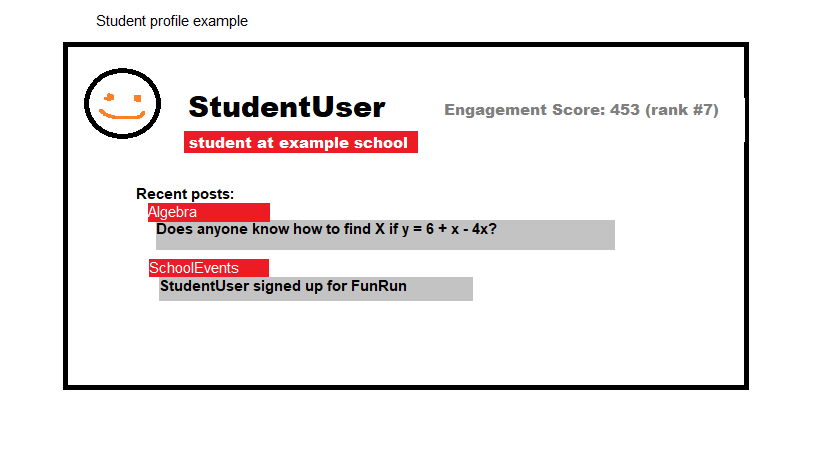

Proposal: Extracurricular Student Interaction App
Schools tend to use various platforms for assigning work and displaying grades, but there isn't really a platform for the extracurricular. My idea is one where you can ask questions about specific classes, receive advice from peers, get notified about school news, receive a personalized feed from followed teachers, clubs, classes.
The platform would be for schools interested in student engagement with the school, something 100% optional, but appealing to the students. Accounts would be able to join a school's bubble with authorization from the school. The schools would be able to interact with the student body via giveaways, competitions, fundraisers. Within the school's bubble there could be various tutoring forums for different classes, Clubs and other activities could have advertisements for new students, and the school would have a news feed for the students to access.
Schools who value engagement from students and organizations like NJHS could have an easy way to keep track of students interaction. Students would gain engagement points for their school by giving valuable advice in the forums or by joining or attending events from the schools bubble, which schools could reward in a way of their choosing ex: custom profile appearance in the school's bubble, weighted giveaways based on engagement score.
A school would need to pay a subscription fee for the cost of hosting their bubble, could vary depending on amount of students in said bubble. Due to the app being feed based advertisements would be worthwhile. On launch we could give free 3 year trials to large schools in hopes of smaller schools developing an interest in our product.
The current main way for schools to foster extracurricular engagement and school related news is Twitter, Our platform would be specialized in a way Twitter will most likely never do.
We need a team for developing the backend responsible for handling all requests, and one for the frontend giving the requests, and potentially an additional one for security.
Concept Art
